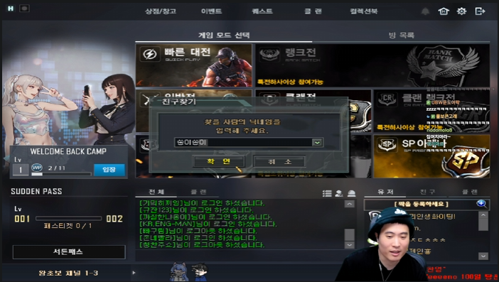

SOOP
#레전드
고래시티 레전드 장면
조회수 1,204 · 좋아요 340
WHALE CITY ARCHIVE
고래시티의 명장면, 클립, 사건, 캐릭터, 월드컵 콘텐츠를 한곳에서 모아볼 수 있는 팬 아카이브 사이트입니다.
오늘의 고래시티

SOOP조회수 1,204 · 좋아요 340
 YOUTUBE
YOUTUBE
조회수 982 · 좋아요 221
 LOCAL
LOCAL
조회수 1,842 · 좋아요 512
고래시티 최고의 순간을 뽑아보세요.
가장 웃겼던 장면은 무엇일까요?
가장 매력적인 캐릭터를 선택하세요.
고래시티에 등장하는 EMS, 경찰, 시청직원, 언론인, 정치인, 갱 정보를 확인하세요.
인물별 프로필 이미지, 애청자, 소속, RP 정보를 정리할 수 있습니다.
이름, 소속, 역할 기준으로 인물을 빠르게 찾아볼 수 있습니다.
고래시티 아카이브 기획 및 제작 시작
고래시티 주요 사건 기록이 추가될 예정입니다.
고래시티 클립과 연결된 사건 타임라인을 정리할 예정입니다.